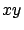

Siguiente: Verificación de la intersección
Subir: Anexos
Anterior: Anexos
Índice General
Intersección de una elipsoide con un plano
En este anexo se hará el desarrollo de cómo hallar la intersección
entre una elipsoide alineada con los ejes y un plano cualquiera.
Luego se verá cómo utilizar dicho resultado para hallar la
intersección entre una elipse de revolución arbitraria y un plano
perpendicular al plano  (que es lo necesario para resolver el
problema planteado en la sección 10.7).
La ecuación de una elipsoide alineada con los ejes es:
Subsecciones
SAPO